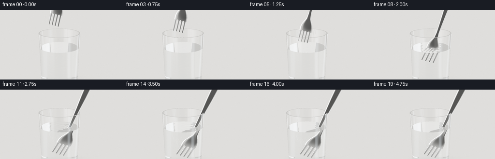
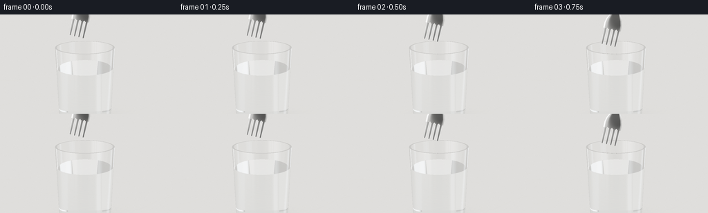

CODING AGENTS AS PIXEL WORLD MODELS
traex/GPT-6.1-Sol · phygen_074
点击播放 · 原生 RGB 像素
逐轮保存的候选
回放视频、检查图与代码变化。
每份候选均可单独播放。实际图片检查记录在下方工具轨迹中。
候选 01播放与检查图
点击播放 · 原生 RGB 像素


展开代码变化
--- 上一保存版本
+++ 本次保存版本
@@ -0,0 +1,335 @@
+"""Procedural, text-only optical still-life animation.
+Only numpy/Pillow are used: analytic geometry and Snell-law ray tracing.
+"""
+from pathlib import Path
+import math
+import numpy as np
+from PIL import Image
+from artifact_io import save
+
+ROOT=Path(__file__).resolve().parent
+W,H,SS=256,144,3
+GH=1.57
+WY=1.16
+BASE=.105
+RO=.535
+SLOPE=.028
+THICK=.033
+EPS=2.e-4
+
+
+def unit(a):
+ return a / np.maximum(np.linalg.norm(a,axis=-1,keepdims=True),1.e-12)
+
+def smoothstep(x):
+ x=np.clip(x,0,1)
+ return x*x*(3-2*x)
+
+
+def environment(d):
+ # A large soft window to the left, a narrow strip to the right, and
+ # neutral studio walls; these are especially important on polished steel.
+ y=d[:,1]; x=d[:,0]; z=d[:,2]
+ c=np.empty((len(d),3),np.float32)
+ v=.37+.16*smoothstep(y+.5)
+ c[:]=v[:,None]*np.array([1.04,1.015,.97])
+ sky=.11*np.exp(-((y-.8)/.4)**2)
+ c+=sky[:,None]*np.array([.9,.97,1.06])
+ window=np.exp(-((x+.68)/.27)**8-((y-.27)/.65)**8-((z-.5)/.85)**8)
+ c+=window[:,None]*np.array([2.9,2.85,2.7])
+ strip=np.exp(-((x-.77)/.075)**4-((y-.16)/.9)**8)
+ c+=strip[:,None]*np.array([1.8,1.98,2.12])
+ dark=np.exp(-((x-.1)/.25)**6-((z-.95)/.25)**6-((y-.04)/.47)**6)
+ c*=1-.86*dark[:,None]
+ # Slim dark mullion in the window, reflected as an elongated metal stripe.
+ mull=np.exp(-((x+.62)/.017)**2-((y-.2)/.6)**8-((z-.5)/.9)**8)
+ c*=1-.77*mull[:,None]
+ return c
+
+
+def backdrop(d):
+ c=environment(d)
+ # Out-of-focus pale warm wall with a darker vertical recess on the far left.
+ x=d[:,0]; y=d[:,1]
+ base=.73+.14*y-.05*x
+ c=base[:,None]*np.array([1.035,1.015,.97])
+ recess=.12*np.exp(-((x+.52)/.07)**2)
+ c-=recess[:,None]*np.array([1.0,.92,.82])
+ return c
+
+
+def medium(p):
+ r=np.sqrt(p[:,0]**2+p[:,2]**2)
+ outer=RO+SLOPE*p[:,1]
+ inner=outer-THICK
+ inglass=(p[:,1]>.012)&(p[:,1]<GH)&(r<outer)&((r>inner)|(p[:,1]<BASE))
+ inwater=(p[:,1]>=BASE)&(p[:,1]<WY)&(r<inner)
+ return np.where(inglass,1.515,np.where(inwater,1.333,1.)).astype(np.float32)
+
+
+def fork_width(y):
+ return np.interp(y,[0,.30,.43,.51,.68,.84,1.1,1.40,1.76,2.12,2.27,2.34,2.38],
+ [.171,.171,.17,.15,.063,.042,.049,.062,.084,.095,.077,.045,0])
+
+
+def fork_shape(x,y):
+ w=fork_width(y)
+ tine=y<.32
+ # Four narrow, gently tapered prongs, with rounded tips and open slots.
+ centers=np.array([-.1275,-.0425,.0425,.1275])
+ nearest=centers[np.argmin(np.abs(x[:,None]-centers),axis=1)]
+ tw=.019+.008*smoothstep(y/.24)
+ tw*=np.sqrt(np.clip(1-((np.minimum(y-.026,0))/.027)**2,0,1))
+ xx=np.where(tine,x-nearest,x)
+ ww=np.where(tine,tw,w)
+ valid=(y>=0)&(y<=2.38)&(np.abs(xx)<ww)
+ # Round bottoms of the three slots rather than squared-off machine cuts.
+ for cc in [-.085,0,.085]:
+ valid &= ~((y>.295)&(y<.341)&(((x-cc)/.015)**2+((y-.309)/.031)**2<1))
+ return valid,xx,np.maximum(ww,.0001)
+
+
+def fork_surface(x,y,side):
+ valid,xx,w=fork_shape(x,y)
+ q=xx/w
+ # Raised, softly bevelled edges, curved shoulder, and bowed handle.
+ z0=.028*np.exp(-((y-.42)/.26)**2)-.014*np.exp(-((y-1.75)/.7)**2)
+ z0-=.12*x*x*np.exp(-((y-.40)/.3)**2)
+ thick=.011+.006*smoothstep((y-.6)/1.1)
+ zz=z0+side*(thick-.009*np.clip(q,-1.1,1.1)**6)
+ dzdx=-.24*x*np.exp(-((y-.4)/.3)**2)-side*.054*np.clip(q,-1.1,1.1)**5/w
+ # The longitudinal derivative is small, but enough to curve specular light.
+ dzdy=-.056*(y-.42)/(.26**2)*np.exp(-((y-.42)/.26)**2)+.028*(y-1.75)/(.7**2)*np.exp(-((y-1.75)/.7)**2)
+ return zz,dzdx,dzdy,valid
+
+
+def fork_intersect(o,d,pose):
+ origin,rot=pose
+ lo=(o-origin)@rot
+ ld=d@rot
+ n=len(o)
+ tbest=np.full(n,np.inf,np.float32)
+ normals=np.zeros((n,3),np.float32)
+ coords=np.zeros((n,3),np.float32)
+ # Bounding sphere rejects the large majority of unrelated rays.
+ cen=np.array([0,1.19,0],np.float32)
+ oc=lo-cen
+ b=np.sum(oc*ld,axis=1)
+ disc=b*b-(np.sum(oc*oc,axis=1)-1.24**2)
+ ids=np.flatnonzero((disc>0)&(np.abs(ld[:,2])>.02))
+ if not len(ids): return tbest,normals,coords
+ a=lo[ids]; v=ld[ids]
+ for side in (1.,-1.):
+ t=(side*.014-a[:,2])/v[:,2]
+ for k in range(4):
+ p=a+t[:,None]*v
+ z,dx,dy,valid=fork_surface(p[:,0],p[:,1],side)
+ den=v[:,2]-dx*v[:,0]-dy*v[:,1]
+ t-=(p[:,2]-z)/np.where(np.abs(den)>.005,den,np.sign(den)*.005+1e-8)
+ p=a+t[:,None]*v
+ z,dx,dy,valid=fork_surface(p[:,0],p[:,1],side)
+ good=valid&(t>EPS)&(t<tbest[ids])&(np.abs(p[:,2]-z)<.005)
+ ii=ids[good]
+ if len(ii):
+ nn=np.stack([-dx[good],-dy[good],np.ones(np.sum(good))],axis=1)*side
+ normals[ii]=unit(nn)@rot.T
+ tbest[ii]=t[good]
+ coords[ii]=p[good]
+ return tbest,normals,coords
+
+
+def metal_color(p,n,d,lc):
+ n=np.where((np.sum(n*d,axis=1)>0)[:,None],-n,n)
+ refl=d-2*np.sum(d*n,axis=1)[:,None]*n
+ # Blurred reflection of the broad light source, with longitudinal polish.
+ out=environment(refl)*.88
+ out=.75*out+.125*environment(unit(refl+np.array([.055,.018,0])))+.125*environment(unit(refl-np.array([.055,.018,0])))
+ light=unit(np.broadcast_to(np.array([-3.2,5,3]),p.shape)-p)
+ h=unit(light-d)
+ spec=np.maximum(np.sum(n*h,axis=1),0)**100
+ out+=spec[:,None]*np.array([1.65,1.6,1.53])
+ out+=.035*np.maximum(np.sum(n*light,axis=1),0)[:,None]
+ # Minute polish lines: texture is monochrome, never a painted metal colour.
+ polish=1+.019*np.sin(lc[:,0]*2400+lc[:,1]*5)
+ out*=polish[:,None]*np.array([.97,.985,1.0])
+ return out
+
+
+def water_wave(x,z,time):
+ # Tiny expanding capillary rings rather than a splash.
+ amp=.0065*smoothstep((time-1.0)/.4)*np.exp(-max(time-3.0,0)*1.8)
+ cx=.08+.10*smoothstep((time-1.)/2.)
+ rr=np.sqrt((x-cx)**2+(z-.045)**2+.0003)
+ phase=39*rr-7.6*(time-1.0)
+ envelope=np.exp(-2.8*rr)*smoothstep((time-1.)*1.1-rr)
+ val=amp*np.sin(phase)*envelope
+ dr=amp*(39*np.cos(phase)-2.8*np.sin(phase))*envelope
+ return val,dr*(x-cx)/rr,dr*(z-.045)/rr
+
+
+def closest(o,d,pose,time):
+ n=len(o)
+ best=np.full(n,np.inf,np.float32)
+ normal=np.zeros((n,3),np.float32)
+ kind=np.zeros(n,np.int8)
+ local=np.zeros((n,3),np.float32)
+ def offer(t,nn,valid,typ):
+ keep=valid&(t>EPS)&(t<best)
+ best[keep]=t[keep]
+ if isinstance(nn,tuple): normal[keep]=nn
+ else: normal[keep]=nn[keep]
+ kind[keep]=typ
+ # Infinite horizontal stone tabletop.
+ t=-o[:,1]/np.where(np.abs(d[:,1])>1.e-7,d[:,1],1.e-7)
+ offer(t,(0.,1.,0.),d[:,1]<0,2)
+ # Outer and inner conical glass walls.
+ for r0,ymin,ymax,sgn in [(RO,.014,GH,1),(RO-THICK,BASE,GH,-1)]:
+ r=r0+SLOPE*o[:,1]
+ a=d[:,0]**2+d[:,2]**2-(SLOPE*d[:,1])**2
+ b=2*(o[:,0]*d[:,0]+o[:,2]*d[:,2]-r*SLOPE*d[:,1])
+ c=o[:,0]**2+o[:,2]**2-r*r
+ disc=b*b-4*a*c
+ sq=np.sqrt(np.maximum(disc,0))
+ for sign in (-1,1):
+ t=(-b+sign*sq)/(2*a+1e-15)
+ p=o+t[:,None]*d
+ norm=unit(np.stack([p[:,0],-SLOPE*(r0+SLOPE*p[:,1]),p[:,2]],axis=1))*sgn
+ offer(t,norm,(disc>=0)&(p[:,1]>ymin)&(p[:,1]<ymax),1)
+ # Glass rim annulus, underside of glass, thick base interior, water surface.
+ for yy,typ in [(GH,1),(.014,1),(BASE,1),(WY,1)]:
+ t=(yy-o[:,1])/np.where(np.abs(d[:,1])>1e-7,d[:,1],1e-7)
+ if yy==WY:
+ # Intersect displaced water surface, then use its true slope normal.
+ for k in range(2):
+ p=o+t[:,None]*d
+ wave,dx,dz=water_wave(p[:,0],p[:,2],time)
+ t+=(WY+wave-p[:,1])/np.where(np.abs(d[:,1])>.02,d[:,1],.02)
+ p=o+t[:,None]*d
+ rr=p[:,0]**2+p[:,2]**2
+ ro=RO+SLOPE*yy; ri=ro-THICK
+ if yy==GH: valid=(rr<ro*ro)&(rr>ri*ri)
+ elif yy==.014: valid=rr<ro*ro
+ else: valid=rr<ri*ri
+ if yy==WY:
+ wave,dx,dz=water_wave(p[:,0],p[:,2],time)
+ nn=unit(np.stack([-dx,np.ones(n),-dz],axis=1))
+ else: nn=(0.,1.,0.)
+ offer(t,nn,valid,typ)
+ tf,nf,cf=fork_intersect(o,d,pose)
+ keep=(tf<best)
+ best[keep]=tf[keep]; normal[keep]=nf[keep]; kind[keep]=3; local[keep]=cf[keep]
+ return best,normal,kind,local
+
+
+def floor_color(p):
+ x,z=p[:,0],p[:,2]
+ base=np.broadcast_to(np.array([.70,.68,.637]),(len(p),3)).copy()
+ # Fine, pale honed-stone texture with broad, almost imperceptible veining.
+ tex=.004*(np.sin(54*x+38*z)+np.sin(89*z-23*x))
+ vein=np.exp(-(np.sin(.9*x+1.7*z+.23*np.sin(4*x))/.045)**2)*.012
+ base+=(tex-vein)[:,None]
+ sha=.16*np.exp(-((x-.16)/.63)**2-((z+.02)/.43)**2)
+ contact=.14*np.exp(-(x/.51)**2-(z/.33)**2)
+ base*=(1-sha-contact)[:,None]
+ # A real transparent object has a light caustic, not an opaque black shadow.
+ r=np.sqrt(((x-.10)/.66)**2+((z-.12)/.38)**2)
+ arc=.20*np.exp(-((r-1)/.11)**2)*np.exp(-((x-.16)/.62)**2)
+ base+=arc[:,None]*np.array([.95,1.0,1.02])
+ base+=.04*np.exp(-((x+.20)/.16)**2-((z-.06)/.38)**2)[:,None]
+ return base
+
+
+def trace(o,d,pose,time):
+ n=len(o)
+ out=np.zeros((n,3),np.float32)
+ through=np.ones((n,3),np.float32)
+ active=np.arange(n)
+ orig=o.copy(); direction=d.copy()
+ for bounce in range(10):
+ if not len(active):break
+ a=orig[active]; v=direction[active]
+ t,norm,kind,lc=closest(a,v,pose,time)
+ empty=kind==0
+ if np.any(empty):out[active[empty]]+=through[active[empty]]*backdrop(v[empty])
+ hit=kind!=0
+ p=a+np.where(hit,t,0)[:,None]*v
+ floor=kind==2
+ if np.any(floor):out[active[floor]]+=through[active[floor]]*floor_color(p[floor])
+ metal=kind==3
+ if np.any(metal):out[active[metal]]+=through[active[metal]]*metal_color(p[metal],norm[metal],v[metal],lc[metal])
+ glass=kind==1
+ ii=active[glass]
+ if not len(ii):break
+ p=p[glass]; nn=norm[glass]; vv=v[glass]; dist=t[glass]
+ nn=np.where((np.sum(nn*vv,axis=1)>0)[:,None],-nn,nn)
+ before=medium(p-vv*.001)
+ after=medium(p+vv*.001)
+ # For the corrugated water sheet, resolve the air-water interface itself.
+ wave,_,_=water_wave(p[:,0],p[:,2],time)
+ topwater=(np.abs(p[:,1]-WY-wave)<.0008)&(p[:,0]**2+p[:,2]**2<(RO+SLOPE*WY-THICK-.001)**2)
+ before=np.where(topwater,np.where(vv[:,1]<0,1.,1.333),before)
+ after=np.where(topwater,np.where(vv[:,1]<0,1.333,1.),after)
+ cos=-np.sum(vv*nn,axis=1)
+ eta=before/after
+ k=1-eta*eta*(1-cos*cos)
+ tir=k<0
+ f0=((before-after)/(before+after))**2
+ fres=f0+(1-f0)*(1-cos)**5
+ fres=np.where(tir,1,fres)
+ refl=unit(vv+2*cos[:,None]*nn)
+ rc=environment(refl)
+ # The water and glass mirror the fork as well as the window.
+ rt,rn,rl=fork_intersect(p+refl*EPS*2,refl,pose)
+ reflected=np.isfinite(rt)&(rt<4)
+ if np.any(reflected):
+ rc[reflected]=metal_color(p[reflected]+rt[reflected,None]*refl[reflected],rn[reflected],refl[reflected],rl[reflected])
+ absorption=np.where((before>1.4)[:,None],np.array([.16,.036,.014]),np.where((before>1.1)[:,None],np.array([.022,.008,.004]),np.zeros(3)))
+ through[ii]*=np.exp(-np.minimum(dist,4)[:,None]*absorption)
+ # Weak mirror paths are collected here, the dominant transmitted path continues.
+ out[ii]+=through[ii]*fres[:,None]*rc
+ through[ii]*=(1-fres)[:,None]
+ transmitted=unit(eta[:,None]*vv+(eta*cos-np.sqrt(np.maximum(k,0)))[:,None]*nn)
+ orig[ii]=p+transmitted*EPS*3
+ direction[ii]=transmitted
+ active=ii[(~tir)&(np.max(through[ii],axis=1)>.006)]
+ if len(active):out[active]+=through[active]*environment(direction[active])
+ return out
+
+
+def main():
+ ww,hh=W*SS,H*SS
+ cam=np.array([.18,2.85,5.6],np.float32)
+ target=np.array([.07,1.22,0],np.float32)
+ forward=unit(target-cam)
+ right=unit(np.cross(forward,[0,1,0])); up=np.cross(right,forward)
+ yy,xx=np.mgrid[:hh,:ww]
+ sx=((xx+.5)/ww-.5)*3.52
+ sy=(.5-(yy+.5)/hh)*3.52*H/W
+ rays=unit(forward+sx.reshape(-1,1)/5.84*right+sy.reshape(-1,1)/5.84*up).astype(np.float32)
+ origins=np.broadcast_to(cam,rays.shape).copy()
+ frames=[]
+ rng=np.random.default_rng(82)
+ grain=rng.normal(0,.0011,(H,W,1))
+ for i in range(20):
+ time=i/4
+ u=smoothstep((time-.1)/3.05)
+ # Initially just above the rim, then gently lowered and settled against it.
+ tipy=1.78-1.46*u
+ angle=math.radians(13+12*smoothstep((time-.7)/2.7))
+ c,s=math.cos(angle),math.sin(angle)
+ rot=np.array([[c,s,0],[-s,c,0],[0,0,1]],np.float32)
+ tipx=-.16+.13*u
+ pose=(np.array([tipx,tipy,.03],np.float32),rot)
+ linear=trace(origins,rays,pose,time).reshape(hh,ww,3)
+ # Photographic shoulder, not flat vector shading.
+ linear=np.maximum(linear*1.1,0)
+ film=(linear*(2.51*linear+.03))/(linear*(2.43*linear+.59)+.14)
+ srgb=np.where(film<=.0031308,film*12.92,1.055*np.maximum(film,0)**(1/2.4)-.055)
+ im=Image.fromarray(np.uint8(np.clip(srgb,0,1)*255)).resize((W,H),Image.Resampling.LANCZOS)
+ ar=np.array(im,dtype=np.float32)/255
+ ar=np.clip(ar+grain,0,1)
+ frames.append(np.uint8(ar*255+.5))
+ print(f'frame {i+1}/20',flush=True)
+ save(np.stack(frames),ROOT)
+
+if __name__=='__main__':main()
可观测工具轨迹
实际执行的命令与返回图片。
命令 1exit 0
/bin/bash -lc "ls -la && cat prompt.txt && printf '\\n---RULES---\\n' && cat GENERATION_RULES.md && printf '\\n---SPEC---\\n' && cat task_spec.json"
命令 2exit 0
/bin/bash -lc "cat artifact_io.py && python - <<'PY'
import numpy,PIL
print('numpy',numpy.__version__)
PY"命令 3exit 0
/bin/bash -lc "cat > generate.py <<'PY'
\"\"\"Procedural, text-only optical still-life animation.
Only numpy/Pillow are used: analytic geometry and Snell-law ray tracing.
\"\"\"
from pathlib import Path
import math
import numpy as np
from PIL import Image
from artifact_io import save
ROOT=Path(__file__).resolve().parent
W,H,SS=256,144,3
GH=1.57
WY=1.16
BASE=.105
RO=.535
SLOPE=.028
THICK=.033
EPS=2.e-4
def unit(a):
return a / np.maximum(np.linalg.norm(a,axis=-1,keepdims=True),1.e-12)
def smoothstep(x):
x=np.clip(x,0,1)
return x*x*(3-2*x)
def environment(d):
# A large soft window to the left, a narrow strip to the right, and
# neutral studio walls; these are especially important on polished steel.
y=d[:,1]; x=d[:,0]; z=d[:,2]
c=np.empty((len(d),3),np.float32)
v=.37+.16*smoothstep(y+.5)
c[:]=v[:,None]*np.array([1.04,1.015,.97])
sky=.11*np.exp(-((y-.8)/.4)**2)
c+=sky[:,None]*np.array([.9,.97,1.06])
window=np.exp(-((x+.68)/.27)**8-((y-.27)/.65)**8-((z-.5)/.85)**8)
c+=window[:,None]*np.array([2.9,2.85,2.7])
strip=np.exp(-((x-.77)/.075)**4-((y-.16)/.9)**8)
c+=strip[:,None]*np.array([1.8,1.98,2.12])
dark=np.exp(-((x-.1)/.25)**6-((z-.95)/.25)**6-((y-.04)/.47)**6)
c*=1-.86*dark[:,None]
# Slim dark mullion in the window, reflected as an elongated metal stripe.
mull=np.exp(-((x+.62)/.017)**2-((y-.2)/.6)**8-((z-.5)/.9)**8)
c*=1-.77*mull[:,None]
return c
def backdrop(d):
c=environment(d)
# Out-of-focus pale warm wall with a darker vertical recess on the far left.
x=d[:,0]; y=d[:,1]
base=.73+.14*y-.05*x
c=base[:,None]*np.array([1.035,1.015,.97])
recess=.12*np.exp(-((x+.52)/.07)**2)
c-=recess[:,None]*np.array([1.0,.92,.82])
return c
def medium(p):
r=np.sqrt(p[:,0]**2+p[:,2]**2)
outer=RO+SLOPE*p[:,1]
inner=outer-THICK
inglass=(p[:,1]>.012)&(p[:,1]<GH)&(r<outer)&((r>inner)|(p[:,1]<BASE))
inwater=(p[:,1]>=BASE)&(p[:,1]<WY)&(r<inner)
return np.where(inglass,1.515,np.where(inwater,1.333,1.)).astype(np.float32)
def fork_width(y):
return np.interp(y,[0,.30,.43,.51,.68,.84,1.1,1.40,1.76,2.12,2.27,2.34,2.38],
[.171,.171,.17,.15,.063,.042,.049,.062,.084,.095,.077,.045,0])
def fork_shape(x,y):
w=fork_width(y)
tine=y<.32
# Four narrow, gently tapered prongs, with rounded tips and open slots.
centers=np.array([-.1275,-.0425,.0425,.1275])
nearest=centers[np.argmin(np.abs(x[:,None]-centers),axis=1)]
tw=.019+.008*smoothstep(y/.24)
tw*=np.sqrt(np.clip(1-((np.minimum(y-.026,0))/.027)**2,0,1))
xx=np.where(tine,x-nearest,x)
ww=np.where(tine,tw,w)
valid=(y>=0)&(y<=2.38)&(np.abs(xx)<ww)
# Round bottoms of the three slots rather than squared-off machine cuts.
for cc in [-.085,0,.085]:
valid &= ~((y>.295)&(y<.341)&(((x-cc)/.015)**2+((y-.309)/.031)**2<1))
return valid,xx,np.maximum(ww,.0001)
def fork_surface(x,y,side):
valid,xx,w=fork_shape(x,y)
q=xx/w
# Raised, softly bevelled edges, curved shoulder, and bowed handle.
z0=.028*np.exp(-((y-.42)/.26)**2)-.014*np.exp(-((y-1.75)/.7)**2)
z0-=.12*x*x*np.exp(-((y-.40)/.3)**2)
thick=.011+.006*smoothstep((y-.6)/1.1)
zz=z0+side*(thick-.009*np.clip(q,-1.1,1.1)**6)
dzdx=-.24*x*np.exp(-((y-.4)/.3)**2)-side*.054*np.clip(q,-1.1,1.1)**5/w
# The longitudinal derivative is small, but enough to curve specular light.
dzdy=-.056*(y-.42)/(.26**2)*np.exp(-((y-.42)/.26)**2)+.028*(y-1.75)/(.7**2)*np.exp(-((y-1.75)/.7)**2)
return zz,dzdx,dzdy,valid
def fork_intersect(o,d,pose):
origin,rot=pose
lo=(o-origin)@rot
ld=d@rot
n=len(o)
tbest=np.full(n,np.inf,np.float32)
normals=np.zeros((n,3),np.float32)
coords=np.zeros((n,3),np.float32)
# Bounding sphere rejects the large majority of unrelated rays.
cen=np.array([0,1.19,0],np.float32)
oc=lo-cen
b=np.sum(oc*ld,axis=1)
disc=b*b-(np.sum(oc*oc,axis=1)-1.24**2)
ids=np.flatnonzero((disc>0)&(np.abs(ld[:,2])>.02))
if not len(ids): return tbest,normals,coords
a=lo[ids]; v=ld[ids]
for side in (1.,-1.):
t=(side*.014-a[:,2])/v[:,2]
for k in range(4):
p=a+t[:,None]*v
z,dx,dy,valid=fork_surface(p[:,0],p[:,1],side)
den=v[:,2]-dx*v[:,0]-dy*v[:,1]
t-=(p[:,2]-z)/np.where(np.abs(den)>.005,den,np.sign(den)*.005+1e-8)
p=a+t[:,None]*v
z,dx,dy,valid=fork_surface(p[:,0],p[:,1],side)
good=valid&(t>EPS)&(t<tbest[ids])&(np.abs(p[:,2]-z)<.005)
ii=ids[good]
if len(ii):
nn=np.stack([-dx[good],-dy[good],np.ones(np.sum(good))],axis=1)*side
normals[ii]=unit(nn)@rot.T
tbest[ii]=t[good]
coords[ii]=p[good]
return tbest,normals,coords
def metal_color(p,n,d,lc):
n=np.where((np.sum(n*d,axis=1)>0)[:,None],-n,n)
refl=d-2*np.sum(d*n,axis=1)[:,None]*n
# Blurred reflection of the broad light source, with longitudinal polish.
out=environment(refl)*.88
out=.75*out+.125*environment(unit(refl+np.array([.055,.018,0])))+.125*environment(unit(refl-np.array([.055,.018,0])))
light=unit(np.broadcast_to(np.array([-3.2,5,3]),p.shape)-p)
h=unit(light-d)
spec=np.maximum(np.sum(n*h,axis=1),0)**100
out+=spec[:,None]*np.array([1.65,1.6,1.53])
out+=.035*np.maximum(np.sum(n*light,axis=1),0)[:,None]
# Minute polish lines: texture is monochrome, never a painted metal colour.
polish=1+.019*np.sin(lc[:,0]*2400+lc[:,1]*5)
out*=polish[:,None]*np.array([.97,.985,1.0])
return out
def water_wave(x,z,time):
# Tiny expanding capillary rings rather than a splash.
amp=.0065*smoothstep((time-1.0)/.4)*np.exp(-max(time-3.0,0)*1.8)
cx=.08+.10*smoothstep((time-1.)/2.)
rr=np.sqrt((x-cx)**2+(z-.045)**2+.0003)
phase=39*rr-7.6*(time-1.0)
envelope=np.exp(-2.8*rr)*smoothstep((time-1.)*1.1-rr)
val=amp*np.sin(phase)*envelope
dr=amp*(39*np.cos(phase)-2.8*np.sin(phase))*envelope
return val,dr*(x-cx)/rr,dr*(z-.045)/rr
def closest(o,d,pose,time):
n=len(o)
best=np.full(n,np.inf,np.float32)
normal=np.zeros((n,3),np.float32)
kind=np.zeros(n,np.int8)
local=np.zeros((n,3),np.float32)
def offer(t,nn,valid,typ):
keep=valid&(t>EPS)&(t<best)
best[keep]=t[keep]
if isinstance(nn,tuple): normal[keep]=nn
else: normal[keep]=nn[keep]
kind[keep]=typ
# Infinite horizontal stone tabletop.
t=-o[:,1]/np.where(np.abs(d[:,1])>1.e-7,d[:,1],1.e-7)
offer(t,(0.,1.,0.),d[:,1]<0,2)
# Outer and inner conical glass walls.
for r0,ymin,ymax,sgn in [(RO,.014,GH,1),(RO-THICK,BASE,GH,-1)]:
r=r0+SLOPE*o[:,1]
a=d[:,0]**2+d[:,2]**2-(SLOPE*d[:,1])**2
b=2*(o[:,0]*d[:,0]+o[:,2]*d[:,2]-r*SLOPE*d[:,1])
c=o[:,0]**2+o[:,2]**2-r*r
disc=b*b-4*a*c
sq=np.sqrt(np.maximum(disc,0))
for sign in (-1,1):
t=(-b+sign*sq)/(2*a+1e-15)
p=o+t[:,None]*d
norm=unit(np.stack([p[:,0],-SLOPE*(r0+SLOPE*p[:,1]),p[:,2]],axis=1))*sgn
offer(t,norm,(disc>=0)&(p[:,1]>ymin)&(p[:,1]<ymax),1)
# Glass rim annulus, underside of glass, thick base interior, water surface.
for yy,typ in [(GH,1),(.014,1),(BASE,1),(WY,1)]:
t=(yy-o[:,1])/np.where(np.abs(d[:,1])>1e-7,d[:,1],1e-7)
if yy==WY:
# Intersect displaced water surface, then use its true slope normal.
for k in range(2):
p=o+t[:,None]*d
wave,dx,dz=water_wave(p[:,0],p[:,2],time)
t+=(WY+wave-p[:,1])/np.where(np.abs(d[:,1])>.02,d[:,1],.02)
p=o+t[:,None]*d
rr=p[:,0]**2+p[:,2]**2
ro=RO+SLOPE*yy; ri=ro-THICK
if yy==GH: valid=(rr<ro*ro)&(rr>ri*ri)
elif yy==.014: valid=rr<ro*ro
else: valid=rr<ri*ri
if yy==WY:
wave,dx,dz=water_wave(p[:,0],p[:,2],time)
nn=unit(np.stack([-dx,np.ones(n),-dz],axis=1))
else: nn=(0.,1.,0.)
offer(t,nn,valid,typ)
tf,nf,cf=fork_intersect(o,d,pose)
keep=(tf<best)
best[keep]=tf[keep]; normal[keep]=nf[keep]; kind[keep]=3; local[keep]=cf[keep]
return best,normal,kind,local
def floor_color(p):
x,z=p[:,0],p[:,2]
base=np.broadcast_to(np.array([.70,.68,.637]),(len(p),3)).copy()
# Fine, pale honed-stone texture with broad, almost imperceptible veining.
tex=.004*(np.sin(54*x+38*z)+np.sin(89*z-23*x))
vein=np.exp(-(np.sin(.9*x+1.7*z+.23*np.sin(4*x))/.045)**2)*.012
base+=(tex-vein)[:,None]
sha=.16*np.exp(-((x-.16)/.63)**2-((z+.02)/.43)**2)
contact=.14*np.exp(-(x/.51)**2-(z/.33)**2)
base*=(1-sha-contact)[:,None]
# A real transparent object has a light caustic, not an opaque black shadow.
r=np.sqrt(((x-.10)/.66)**2+((z-.12)/.38)**2)
arc=.20*np.exp(-((r-1)/.11)**2)*np.exp(-((x-.16)/.62)**2)
base+=arc[:,None]*np.array([.95,1.0,1.02])
base+=.04*np.exp(-((x+.20)/.16)**2-((z-.06)/.38)**2)[:,None]
return base
def trace(o,d,pose,time):
n=len(o)
out=np.zeros((n,3),np.float32)
through=np.ones((n,3),np.float32)
active=np.arange(n)
orig=o.copy(); direction=d.copy()
for bounce in range(10):
if not len(active):break
a=orig[active]; v=direction[active]
t,norm,kind,lc=closest(a,v,pose,time)
empty=kind==0
if np.any(empty):out[active[empty]]+=through[active[empty]]*backdrop(v[empty])
hit=kind"'!=0
p=a+np.where(hit,t,0)[:,None]*v
floor=kind==2
if np.any(floor):out[active[floor]]+=through[active[floor]]*floor_color(p[floor])
metal=kind==3
if np.any(metal):out[active[metal]]+=through[active[metal]]*metal_color(p[metal],norm[metal],v[metal],lc[metal])
glass=kind==1
ii=active[glass]
if not len(ii):break
p=p[glass]; nn=norm[glass]; vv=v[glass]; dist=t[glass]
nn=np.where((np.sum(nn*vv,axis=1)>0)[:,None],-nn,nn)
before=medium(p-vv*.001)
after=medium(p+vv*.001)
# For the corrugated water sheet, resolve the air-water interface itself.
wave,_,_=water_wave(p[:,0],p[:,2],time)
topwater=(np.abs(p[:,1]-WY-wave)<.0008)&(p[:,0]**2+p[:,2]**2<(RO+SLOPE*WY-THICK-.001)**2)
before=np.where(topwater,np.where(vv[:,1]<0,1.,1.333),before)
after=np.where(topwater,np.where(vv[:,1]<0,1.333,1.),after)
cos=-np.sum(vv*nn,axis=1)
eta=before/after
k=1-eta*eta*(1-cos*cos)
tir=k<0
f0=((before-after)/(before+after))**2
fres=f0+(1-f0)*(1-cos)**5
fres=np.where(tir,1,fres)
refl=unit(vv+2*cos[:,None]*nn)
rc=environment(refl)
# The water and glass mirror the fork as well as the window.
rt,rn,rl=fork_intersect(p+refl*EPS*2,refl,pose)
reflected=np.isfinite(rt)&(rt<4)
if np.any(reflected):
rc[reflected]=metal_color(p[reflected]+rt[reflected,None]*refl[reflected],rn[reflected],refl[reflected],rl[reflected])
absorption=np.where((before>1.4)[:,None],np.array([.16,.036,.014]),np.where((before>1.1)[:,None],np.array([.022,.008,.004]),np.zeros(3)))
through[ii]*=np.exp(-np.minimum(dist,4)[:,None]*absorption)
# Weak mirror paths are collected here, the dominant transmitted path continues.
out[ii]+=through[ii]*fres[:,None]*rc
through[ii]*=(1-fres)[:,None]
transmitted=unit(eta[:,None]*vv+(eta*cos-np.sqrt(np.maximum(k,0)))[:,None]*nn)
orig[ii]=p+transmitted*EPS*3
direction[ii]=transmitted
active=ii[(~tir)&(np.max(through[ii],axis=1)>.006)]
if len(active):out[active]+=through[active]*environment(direction[active])
return out
def main():
ww,hh=W*SS,H*SS
cam=np.array([.18,2.85,5.6],np.float32)
target=np.array([.07,1.22,0],np.float32)
forward=unit(target-cam)
right=unit(np.cross(forward,[0,1,0])); up=np.cross(right,forward)
yy,xx=np.mgrid[:hh,:ww]
sx=((xx+.5)/ww-.5)*3.52
sy=(.5-(yy+.5)/hh)*3.52*H/W
rays=unit(forward+sx.reshape(-1,1)/5.84*right+sy.reshape(-1,1)/5.84*up).astype(np.float32)
origins=np.broadcast_to(cam,rays.shape).copy()
frames=[]
rng=np.random.default_rng(82)
grain=rng.normal(0,.0011,(H,W,1))
for i in range(20):
time=i/4
u=smoothstep((time-.1)/3.05)
# Initially just above the rim, then gently lowered and settled against it.
tipy=1.78-1.46*u
angle=math.radians(13+12*smoothstep((time-.7)/2.7))
c,s=math.cos(angle),math.sin(angle)
rot=np.array([[c,s,0],[-s,c,0],[0,0,1]],np.float32)
tipx=-.16+.13*u
pose=(np.array([tipx,tipy,.03],np.float32),rot)
linear=trace(origins,rays,pose,time).reshape(hh,ww,3)
# Photographic shoulder, not flat vector shading.
linear=np.maximum(linear*1.1,0)
film=(linear*(2.51*linear+.03))/(linear*(2.43*linear+.59)+.14)
srgb=np.where(film<=.0031308,film*12.92,1.055*np.maximum(film,0)**(1/2.4)-.055)
im=Image.fromarray(np.uint8(np.clip(srgb,0,1)*255)).resize((W,H),Image.Resampling.LANCZOS)
ar=np.array(im,dtype=np.float32)/255
ar=np.clip(ar+grain,0,1)
frames.append(np.uint8(ar*255+.5))
print(f'"'frame {i+1}/20',flush=True)
save(np.stack(frames),ROOT)
if __name__=='__main__':main()
PY
OPENBLAS_NUM_THREADS=1 python generate.py"命令 4exit 0
/bin/bash -lc "python - <<'PY'
import numpy as np
from pathlib import Path
from PIL import Image
p=np.load('pixels.npz')['pixels']
print('Packed RGB:',p.shape,p.dtype)
paths=['generate.py','pixels.npz','index.html','inspection.png','transition_check.png']
for n in paths: print(n,Path(n).stat().st_size)
print('Frames:',len(list(Path('frames').glob('*.png'))))
a=np.array(Image.open('frames/00.png')); b=np.array(Image.open('frames/19.png'))
print('Mean first/last:',a.mean(axis=(0,1)), b.mean(axis=(0,1)))
print('First to last average absolute RGB change:',np.abs(a.astype(float)-b).mean())
PY
command -v ffmpeg || true"保存候选 1 份；完成命令 4 次；可验证图片返回 0 张。原始 API 响应与完整日志保留在本地。